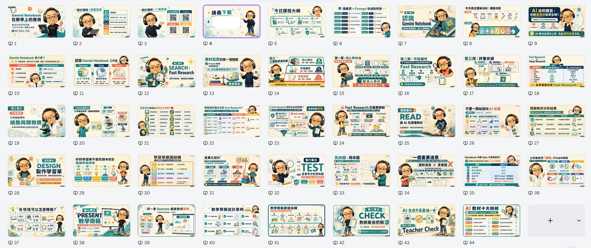

Facebook｜洪旭亮：AI 簡報生成助理 Codex Skill，可從教材與逐字稿產生 PPTX

一句話摘要
洪旭亮把自己常用的「AI 簡報製作流程」整理成開放使用的 Codex Skill：`generate-ai-presentations`。它可把 Markdown、逐字稿、課程筆記、Word、PDF、網頁文章或既有投影片文字，轉成 16:9 簡報圖片、PPTX、逐頁圖片生成提示詞與完整簡報規劃表。
原文重點
- 這是一個開放使用的 Skill，作者邀請大家安裝、測試並回饋使用心得。
- Skill 名稱：AI 簡報生成助理（`generate-ai-presentations`）。
- 可輸入的素材包含 Markdown、逐字稿、課程筆記、Word、PDF、網頁文章或既有投影片文字。
- 可輸出：16:9 簡報圖片、PPTX 簡報檔、逐頁圖片生成提示詞、完整簡報規劃表。
- 它不會一收到資料就直接生成，而是會依序確認文字處理方式、固定人物 IP、視覺風格、輸出格式、頁數與分批生成方式。
- Facebook 留言中提供 GitHub 專案與安裝方式。
GitHub 專案查核
GitHub 專案：`hsuliang/generate-ai-presentations-skill`
專案 README 說明這是一個可重複使用的 Codex Agent Skill，用於把來源內容轉成 16:9 presentation images、PPTX decks、per-slide image prompts 或 presentation planning tables。
README 可見功能包含：
- 依序確認文字保留方式、人物 IP、視覺風格、輸出格式與頁數。
- 正確解析「投影片 XX：標題」與 `Slide XX: Title` 等頁面註記。
- 支援完整保留、潤飾或摘要重組三種文字模式。
- 使用人物 IP 時，維持辨識度並變換位置、大小、姿勢、服飾與互動。
- 建立並鎖定全域字體規格，確保同一文字層級跨頁一致。
- 逐頁檢查 16:9、可讀性、版面一致性與主題圖示。
安裝方式是在 Codex 對話框輸入：
`$skill-installer https://github.com/hsuliang/generate-ai-presentations-skill/tree/main/skills/generate-ai-presentations`
若安裝後暫時沒看到 Skill，README 建議重新啟動 Codex。
主圖觀察
貼文主圖是一張簡報縮圖總覽，顯示約 44 張 16:9 投影片範例，主題是「Gemini Notebook 在教學上的應用」。縮圖可見課程結構包含：
- 認識 Gemini Notebook。
- Search / Fast Research。
- Read：讓 AI 先讀懂教材。
- Design：製作學習單。
- Test：從營考分析到命題。
- Present：教學簡報。
- Check：教師最後把關。
這張圖本身也展示了此 Skill 的核心價值：將教學內容拆成單元、流程、講義頁、Prompt 對照表、限制提醒與檢核清單，並維持同一角色 IP 與視覺風格。
對欒帥的可用價值
- 很適合拿來做課程簡報、研習教材、教案投影片與教學社群圖卡。
- 對 AI 課程設計尤其有用：可把逐字稿或課程筆記先轉成規劃表，再分批產生投影片與圖片提示詞。
- 它把「先問清楚需求」寫成 Skill 流程，可降低 AI 直接亂生成簡報的問題。
- 可作為 Hermes / Codex / Agent Skill 教學案例：展示如何把個人工作流模組化、公開化、可安裝化。
使用提醒
- 若輸入含學生資料、課程名單或內部教材，應先確認是否可上傳或交給雲端模型處理。
- 若使用固定人物 IP 或真人肖像，需留意肖像權與授權範圍。
- PPTX 與圖片品質仍需要人工最後檢查，尤其是中文字、圖表、引用來源與版面一致性。
- 若要公開分享成果，建議保留 GitHub 專案連結與作者授權標示。